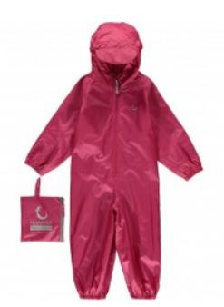

Интернет-магазин детских товаров
Одежда
Hippychick Комбинезон-дождевик
Летний непромокаемый детский доджевик. Надежная защита от непогоды.
Описание товара
Летний комбинезон-дождевик Хиппичик ультралегкий и компактный. В сложенном виде он легко поместится в мамину сумочку или папин карман. Поэтому его очень удобно всегда брать с собой на всякий случай. Если погода испортилась, вы в любой момент легко сможете надеть его на ребенка. Или наоборот, можно выходить гулять сразу после ливня, развлекаться по полной программе на мокрой детской площадке, а потом снять комбинезон и идти по своим делам в чистой и сухой одежде.
Ткань комбинезона-дождевика Хиппчик очень тонкая и легкая, не стесняет движения. Поэтому он очень хорош для активных детей. Кроме того он незаменим для малышей, которые только учатся ходить и будут рады поползать по мокрой травке. Главные его достоинства – непромокаемость, компактность и цена. Это уникальный комбинезон, не имеющий аналогов на рынке.
Хиппичик – популярнейшая марка детских товаров в Англии. Это слово синоним качества, добротности, продуманности, практичности и экологичности. Марка регулярно завоевывает награды на престижных конкурсах детских товаров в Англии и за ее пределами. Комбинезон Хиппичик есть в гардеробе всех продвинутых английских малышей, включая маленького принца Великобритании. Это неудивительно, потому что по своим качествам эта непромокаемая одежда с легкостью обходит конкурентов.
Дышащая грязеотталкивающая ветрозащитная и износостойкая ткань вместе с грамотной системой утяжек делают комбинезоны Хиппичик самым разумным выбором для вдумчивого покупателя. А комбинезоны-дождевики вообще не имеют аналогов на рынке. Обеспечить такую же компактность и непромокаемость не может ни одна другая марка.
Особенности конструкции:
Горло ребенка надежно закрыто. В талии утянут резиновой вставкой. Рукава и штанины снабжены эластичными манжетами на резинке. Молния комбинезона прочная, безопасная и снабжена специальным клапаном, чтобы не натирать шею ребенка. Капюшон комбинезона снабжен небольшим козырьком для дополнительной защиты лица ребенка от дождя. Форма капюшона регулируется двумя резиновыми вставками по бокам. Дождевик изготовлен из тонкой, но крепкой ткани (100% полиэстер). На внутреннюю сторону ткани нанесена тонкая полиуретановая (PU) пленка-мембрана, задерживающая влагу, но пропускающая воздух. Швы надежно проклеены. Водонепроницаемость дождевиков - 3000 мм, воздухопроницаемость 3000 гр/кв.м/24ч.
Уход
Нет необходимости часто стирать комбинезон Хиппичик. Грязеотталкивающее тефлоновое покрытие на ткани позволяет легко удалить грязь просто влажной губкой. Возможна ручная и машинная стирка в режиме "бережная стирка", без отжима и сушки, при температуре до 30°С. Перед стиркой предварительно застегнуть молнию и застежки на «липучке». Лучше всего стирать комбинезоны Хиппичик специальными средствами для стирки мембранной ткани. Не используйте порошки содержащие отбеливатель, кондиционер. Для максимально долгого сохранения непромокаемых и грязеотталкивающих свойств ткани не рекомендуется отбеливать, сдавать в химчистку и гладить утюгом. Мембранная ткань также «боится» лака для волос и репеллентов. Сушить комбинезон после стирки нужно вывернув его на изнанку и повесив на прищепки. Сушить его в машине и вблизи нагревательных приборов нельзя.
Характеристики товара
-
Страна изготовленияКитай
-
Количество грузовых мест1
-
Вид одеждыдождевик
-
Полдля мальчика, для девочки
-
Материалполиэстер
-
Застёжкана молнии
-
Капюшонесть
-
Отделкабез отделки
-
Карманынет
Teхнические характеристики
| Вec упаковки | 0.3 |
| Высота упаковки | 25 |
| Ширина упаковки | 3 |